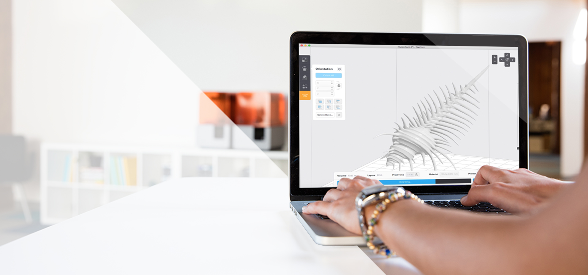

Najbardziej zaawansowana technologicznie drukarka 3D
Drukarka 3D Formlabs Form 2 wykorzystuje technologię stereolitografii (SLA) do tworzenia precyzyjnych wydruków w najwyższej jakości. W połączeniu z łatwością obsługi i szybkością druku Form 2 znajduje zastosowanie w wielu branżach: od przemysłu do medycyny.
-
Wysoka precyzja dla skomplikowanych geometriiUlepszony układ optyczny, podgrzewana komora robocza i większa moc lasera – to wszystko sprawia, że Form 2 w pełni wykorzystuje możliwości technologii SLA. Wyjątkowa gładkość powierzchni i dokładność druku są możliwe przy użyciu warstwy o wysokości zaledwie 25 mikronów.
-
Łatwa wymiana żywicyMateriał uzupełnia się czysto i bezpiecznie. Urządzenie samo wykryje zmianę materiału i dostosuje ustawienia druku. Zautomatyzowany system podawania żywicy pozwala na bezobsługową pracę.
-
Obsługa Plug&PlaySterowanie pracą drukarki odbywa się za pomocą dotykowego ekranu. Panel wyświetla podgląd wgranego projektu oraz czas druku i aktualną ilość naniesionych warstw. Wystarczy zaimportować model 3D i jednym kliknięciem rozpocząć wydruk.
Dodatkowe cechy
Kompletny ekosystem
Na system druku 3D składa się oprogramowanie PreForm oraz urządzenia do postprocessingu Form Wash i Form Cure. Do każdej drukarki dostarczany jest także FinishKit – kompletny zestaw narzędzi do obróbki modeli.
Wygodne przesyłanie plików
Wgraj projekty do druku poprzez Wi-Fi, USB, Ethernet lub USB. Przechowuj pliki na wbudowanym dysku twardym o pojemności 1 GB.

Wsparcie techniczne
Możesz liczyć na naszą pomoc na etapie wyboru drukarki 3D, a także po zakupie. Zapewniamy profesjonalne szkolenia, wsparcie techniczne oraz opiekę pogwarancyjną.
Materiały do druku 3D
Standardowe
Inżynieryjne
Odlewnicze
Stomatologiczne
Wyjątkowa wydajność i wysoka jakość.
Standard Resin to zmodyfikowany materiał dla zapewnienia najwyższej jakości rezultatów. Standardowa żywica Formlabs zachowuje wysoką dokładność modelu bez ryzyka utraty wytrzymałości.
-
• Materiał dostępny jest w czterech kolorach:Transparentny (Clear), biały (White), szary (Gray) oraz czarny (Black)
-
• Wysoka rozdzielczośćStarannie opracowane żywice dla wymagających detali pozwolą uchwycić najdrobniejsze elementy w modelu.
-
• Wytrzymałość i precyzjaŻywice Standard są polecane do tworzenie dokładnych i niezawodnych elementów, idealne do szybkiego prototypowania produktu.
-
• Wykończenie powierzchniIdealnie gładka zaraz po wyjęciu z drukarki, części wydrukowane w technologii SLA mają połysk i wykończenie takie jak produkt końcowy.

-
• ToughMateriał imitujący ABS o porównywalnej sprężystości i odporności na rozciąganie. Idealny materiał dla prototypów funkcjonalnych.
-
• DurableMateriał trwały, symulujący polipropylen (PP), posiada porównywalnie niski moduł sprężystości i odporność na uderzenia.
-
• FlexibleElastyczny materiał osiąga twardość zaledwie 80A twardości gumy (w skali Shore’a). Do modeli ulegających zginaniu i kompresji.
-
• High TempDo odlewania i kształtowania termicznego. Odporność na temperaturę 289°C przy 0,45 MPa jest najwyższą na rynku materiałów do druku 3D.
-
• Grey Pro NOWOŚĆŻywica o zwiększonej wytrzymałości do tworzenia funkcjonalnych prototypów. Modele nadają się do wielokrotnego testowania.
-
• Rigid NOWOŚĆŻywica została wzmocniona szkłem, co zapewnia wydrukom sztywność oraz nadaje im jeszcze gładszą powierzchnię.
-
• High Temp
Do procesów produkcji takich jak: odlewanie i kształtowanie termiczne. Odporność na temperaturę 289°C przy 0,45 MPa jest najwyższą na rynku materiałów do druku 3D. -
• Castable
Materiał wypala się całkowicie, nie pozostawiając popiołu. Pozwala uchwycić najdrobniejsze szczegóły modelu przy zachowaniu gładkiej powierzchni.
-
• Dental ModelDo modeli koronowo-mostowych z wymiennymi matrycami z zachowaniem stałego dopasowania. Precyzja wydruków w zakresie ± 35 mikrometrów. Gładkie, matowe wykończenie powierzchni i kolor podobny do gipsu ułatwiają przejście z produkcji modelu analogowego na cyfrowy.
-
• Dental SGMateriał biokompatybilny pierwszej klasy (EN-ISO 10993-1:2009/AC:2010, USP Class VI), przeznaczony dla dentystów do tworzenia precyzyjnych prowadnic chirurgicznych, modeli stomatologicznych lub podobnych detali.
-
• Dental LT ClearŻywica biokompatybilna z klasą IIa o wysokiej odporności na zrywanie i zużycie. Nadaje się do szyn, elementów mocujących i innych bezpośrednich urządzeń ortodontycznych. Transparentna barwa zapewnia wysoką przejrzystość optyczną dla pięknych produktów końcowych.
Poznaj intuicyjne oprogramowanie
PreForm. Przygotuj projekt i ustaw wydruk jednym kliknięciem.


Automatyczna orientacja modeli na platformie roboczej
Inteligentne rozmieszczanie struktur podporowych
Intuicyjne edytowanie i zarządzanie modelami

Specyfikacja
Zastosowania drukarek 3D Stratasys
Wyróżnienie w kategorii Najlepsza Zagraniczna Desktopowa Drukarka 3D Roku 2017
Najlepsza drukarka 3D w technologii SLA w 2018 roku
I would recommend it over any other SLA printer barring true industrial models.